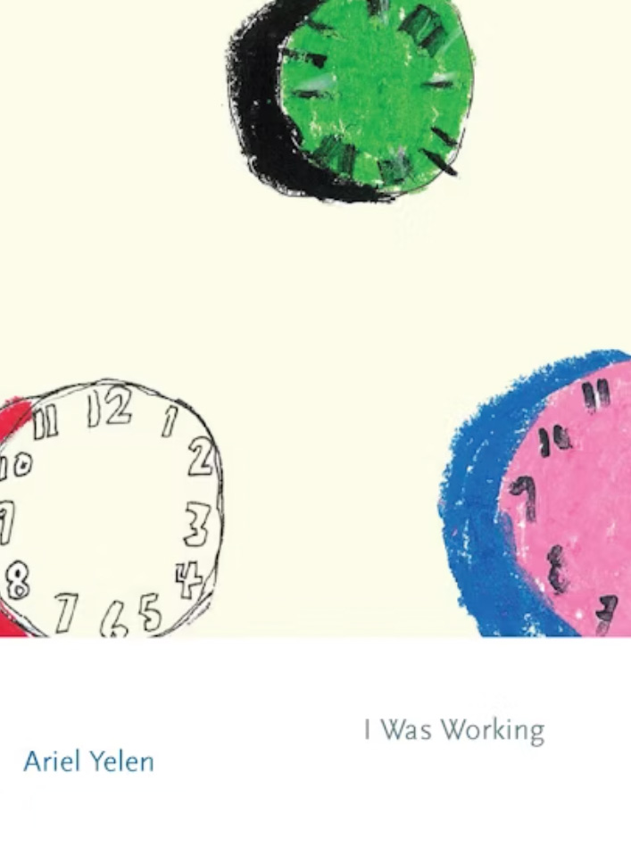

 Stacy Szymaszek, author of Famous Hermits and The Pasolini Book writes:
“I love poems that impart how poets get by, meaning, what we do for a living. I also love poems that take risks that can only
come from lived experiences of risk. In I Was Working, Ariel Yelen lays bare the sly vagaries of late capitalism (would you
rather be ‘love-low’ or ‘money-low’?) and offers a way to reinvent our relationships outside the logic of exploitation through
authentically living with others. Yelen uses the tension of writing poetry when she has no time to write to create some of the most
beautiful ‘work poems’ I have ever read. Her book is no small miracle—it’s so good.”
Cathy Park Hong, author of Engine Empire and Minor Feelings, writes:
“Ariel Yelen’s poetry is exquisitely witty and charming. These poems are intimate etchings of a poet’s daily life under late capitalism.
Astutely observed, pleasurable to read, and heartbreakingly relatable, I Was Working is a collection you’ll read and reread."
Leah Dworkin, BOMB Magazine:
"These poems ask the question, what does it mean to live a life that exists in an establishment outside yourself? What is time when it’s not ours? What is the job of the poet?"
New York Public Library, Selected as Top 10 Best Books of 2024:
"Laugh to keep from crying in this relatable collection that interrogates with deft irony how office work morphs from livelihood to, simply, life."
Austin Adams, Rain Taxi Review:
"In her debut poetry collection, I Was Working, Ariel Yelen composes with the strangled chords of the contemporary workplace a fresh kind of music. . . .
Yelen’s poems convincingly render the drone, distraction, and seething frustration of that chthonic bargain the modern creative has to make: holding a day job."
Miri Karraker, BOMB Magazine:
" Throughout I Was Working the poet, who "needs so much," confronts the limits of her time and the logics of those limitations, showing the ways in which work becomes a force as big as time itself, dictating form and consciousness."
Robert Dunsden, Colorado Review:
“A pleasing first collection. . . . all the poems here offer thoughtful observation and serious consideration. . . . [I Was Working is] both highly original and shamelessly entertaining.
There’s an informed maturity here, combined with a little playfulness and a good ear, which makes for a quite remarkable debut.